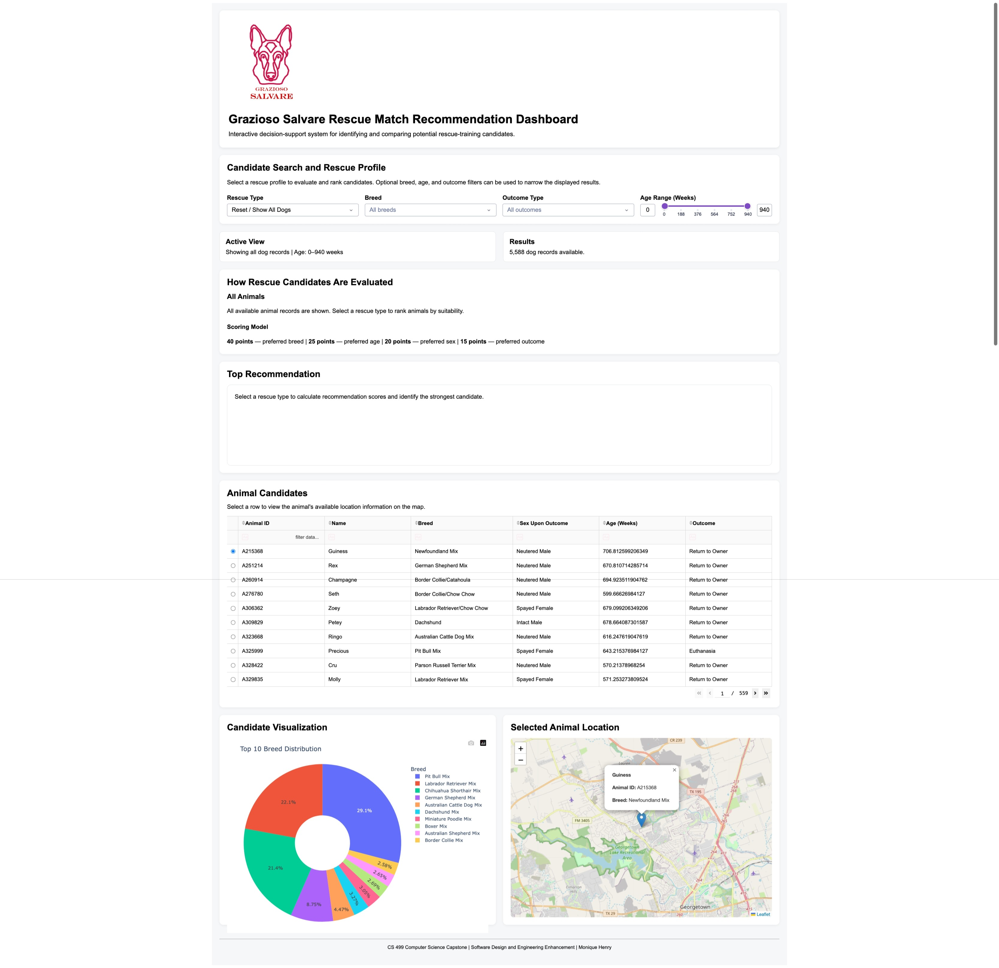

Original Artifact
CS 340 Grazioso Salvare animal rescue dashboard.
CS 499 Enhancement One
A modular redesign of the Grazioso Salvare animal shelter dashboard into an explainable Rescue Match Recommendation System.
The artifact selected for the software design and
engineering category is the Grazioso Salvare animal rescue
dashboard originally created in CS 340: Client/Server
Development. The application was developed using Python,
Dash, Pandas, MongoDB, Plotly, Dash Leaflet, and a custom
AnimalShelter data-access class.
The original dashboard helped users review Austin Animal Center records and identify dogs that could potentially satisfy water rescue, mountain or wilderness rescue, and disaster or individual tracking requirements. Users could apply a rescue filter, review matching records in an interactive table, view a breed chart, and display a selected animal on a map.
Although the original application was functional, much of its database, filtering, interface, chart, map, and callback logic was concentrated in a single notebook. This made the project more difficult to maintain, test, secure, reuse, and expand.
CS 340 Grazioso Salvare animal rescue dashboard.
Grazioso Salvare Rescue Match Recommendation System.
Modular software architecture, maintainability, reliability, testing, and user experience.
Rescue professionals who need understandable decision-support information.
I selected this artifact because it demonstrates several important areas of software engineering in one application, including database connectivity, application logic, event-driven callbacks, user-interface design, data visualization, and interaction between a data layer and a presentation layer.
The project also provided an opportunity to demonstrate that professional software engineering involves more than making an application function. A professional computing solution should be organized, understandable, testable, maintainable, secure, and useful to the people who depend on it.
The enhancement preserved the original purpose of the dashboard while improving its internal architecture, reliability, decision-support features, and user communication.
| Area | Original Artifact | Enhancement One |
|---|---|---|
| Architecture | Most dashboard responsibilities were located in one notebook. | Configuration, data access, recommendation rules, service logic, interface layout, callbacks, and startup wiring were separated into focused modules. |
| Decision Support | Rescue selections relied primarily on fixed database filters. | The enhanced system assigns an explainable suitability score using breed, age, sex, and outcome criteria. |
| User Communication | Users received filtered records, a chart, and a map. | Users receive ranked recommendations, match levels, match reasons, an active profile explanation, and a top-candidate summary. |
| Reliability | Some operations relied on fixed DataFrame column positions or assumed that fields existed. | The enhanced design uses named fields, coordinate validation, empty-result handling, safe column removal, and controlled selections. |
| Security Design | Legacy connection information was closely connected to the source, and update or deletion operations were insufficiently restricted. | Credentials were moved to environment-based configuration, inputs were validated, and unsafe empty update or delete queries were rejected. |
| Testing | The original project did not include focused automated tests for the recommendation behavior. | Automated tests were added for scoring, filtering, ranking, configuration, validation, security safeguards, mapping, and application startup. |
Application responsibilities were separated into focused components so individual features can be maintained and tested independently.
The dashboard now communicates why a candidate was recommended instead of only displaying a strict matching result.
Named fields, reusable service functions, empty result handling, and validation reduce dependence on fragile assumptions.
Database configuration was separated from the main application logic to avoid exposing sensitive connection details.
Result summaries, match reasons, rankings, and visualizations make technical results easier for rescue professionals to understand.
Tests provide evidence that the refactored architecture preserves expected functionality and handles invalid or incomplete data safely.

Automated and manual testing were used to confirm that the software redesign preserved the application’s core functionality. The tests evaluated recommendation scoring, filtering, ranking, configuration validation, database safeguards, coordinate validation, rescue-rule behavior, and application startup.
The completed Enhancement One test suite confirmed that the recommendation behavior, modular services, input safeguards, database protections, map coordinates, and startup components operated as expected. Manual review also confirmed that the table, chart, map, callbacks, rescue filters, recommendation card, and ranked results remained functional after refactoring.
Enhancing this artifact strengthened my understanding of modular architecture, separation of concerns, reusable services, input validation, error handling, automated testing, and user-centered design. The original project demonstrated that I could develop a working database-driven dashboard. The enhanced project demonstrates that I can evaluate an existing system and redesign it using more professional software engineering practices.
One of the most important challenges was preserving the table, chart, map, rescue filters, and callback behavior while reorganizing the application. In the original notebook, data moved directly between MongoDB queries, Pandas DataFrames, Dash callbacks, and visual components. Separating these responsibilities required me to trace the complete data flow and establish clear inputs and outputs between the modules.
I addressed this challenge by dividing the application into configuration, data-access, rescue-rule, recommendation, service, layout, callback, and startup responsibilities. This design reduced unnecessary dependencies and made it possible to test important behavior without running the entire dashboard or requiring every component to be active at the same time.
Another important improvement was changing the dashboard from a fixed filtering tool into an explainable decision-support application. The enhanced interface does not simply identify animals that meet a strict query. It ranks candidates, presents suitability scores, and explains the characteristics that contributed to each recommendation. This makes the results more useful to both technical and nontechnical users.
The enhancement also reinforced the importance of testing during refactoring. A large structural change can create unexpected problems even when the visible interface appears unchanged. Automated tests allowed me to evaluate recommendation behavior, validation, configuration, database safeguards, mapping, and application startup while protecting the original functionality.
This artifact supports the computer science outcomes involving professional communication, the design and evaluation of computing solutions, the use of industry-standard tools and practices, and the development of a security-focused mindset. The source-code structure communicates technical decisions to developers, while the dashboard communicates recommendation results to users in a clear and understandable format.
The most significant result of this enhancement is the overall organization of the application. The original artifact showed that I could make a client/server application function. The enhanced artifact shows that I can engineer a system that is easier to understand, test, maintain, secure, and expand as requirements change.
The downloadable artifact contains the completed Software Design and Engineering enhancement, including the modular application source code, configuration example, testing files, supporting documentation, and requirements.
Sensitive credentials, virtual-environment files, cache dictionaries, and temporary development files are excluded from the published package.